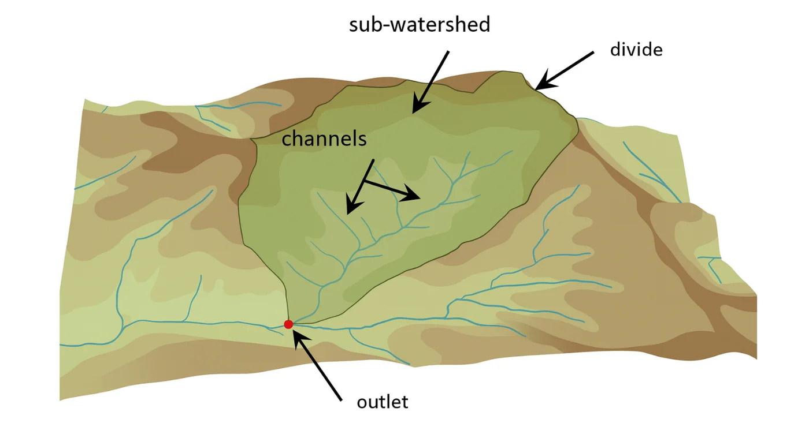
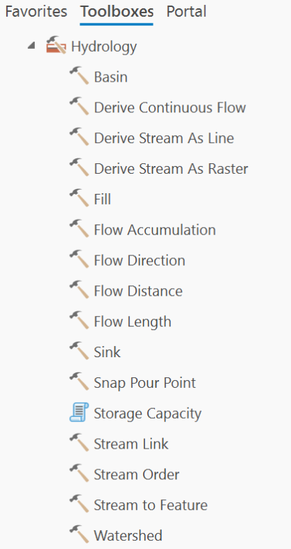
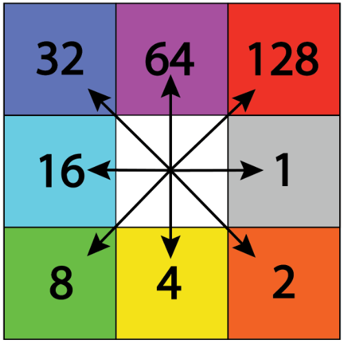

This page presents a geospatial analysis aimed at identifying which sub-watersheds contribute most significantly to riverine flood risk in Puerto Rico.
By combining terrain models, hydrologic processing tools, and land use data, we created a ranking system for sub-watershed runoff potential, designed to support situational awareness and long-term planning for NWS San Juan.
But first, what is a sub-watershed?
A sub-watershed is a smaller division of a larger watershed: a geographic area where all rainfall drains to a common point, such as a river, lake, or stream.

In Puerto Rico, watersheds are organized by the Hydrologic Unit Code (HUC) system:
- HU10: larger watershed areas
- HU12: smaller sub-watersheds within HU10s
These units are part of the national hydrologic framework used by USGS and other agencies. In this project, we used HU12 boundaries to evaluate runoff potential at a finer scale.
Watersheds in Puerto Rico
In Puerto Rico, Hydrologic Unit Code 10 (HU10) watersheds represent medium-scale drainage areas that capture the flow of water from smaller sub-basins into larger river systems. There are 21 HU10 watersheds on the main island (plus three island units for Vieques, Culebra and Isla de Mona), each named after the primary river or geographic feature it encompasses. Some of the most prominent include the Río Grande de Loíza, Río Grande de Arecibo, Río La Plata, Río Culebrinas, Río Guanajibo, and Río Grande de Manatí watersheds. These HU10 units are critical for hydrologic analysis and water resource management, serving as foundational units in flood forecasting, conservation planning, and watershed modeling.
Hydrologic Unit Code 12 (HU12) watersheds in Puerto Rico (in gray) represent the finest level of standardized hydrologic subdivision, capturing highly localized drainage patterns within HU10 units. There are over 200 HU12 sub-watersheds across the island, each delineating a small catchment area that contributes runoff to a specific segment of a river or stream. These sub-watersheds are key to understanding localized flood behavior, land use impacts, and streamflow variability. Examples of HU12 names include Río Cañas Abajo at Ponce, Río Gurabo at Gurabo, Río Bayamón near Bayamón, and Río Blanco at Naguabo. HU12 units are especially useful in high-resolution modeling, site-specific hydrologic assessments, and identifying priority areas for mitigation and sensor placement.
Digital Elevation Model (DEM)
A Digital Elevation Model (DEM) is a raster dataset representing terrain elevation. It serves as the foundation for hydrologic analysis because it determines how water flows across the land surface. We used a 30-m DEM of Puerto Rico for the preliminary SWCI assessment and a 10-m DEM for the enhanced SWCI.
Hydrology toolbox in ArcGIS Pro
The Hydrology toolbox in ArcGIS Pro provides several tools to simulate how water flows over the terrain using digital elevation data. These tools are essential for watershed analysis, identifying stream networks, and understanding flood-prone areas. Figure 2 shows the tools available; the toolbox is useful to:
- Trace water paths across a surface
- Generate flow accumulation
- Model stream networks
- Support flood modeling and watershed delineation

Flow direction
Flow direction determines the direction water would flow from each cell based on the steepest descent.
- Uses the DEM as input
- Output: a raster where each pixel’s value points toward the steepest downslope neighbor (D8 model)
This step is crucial for determining how water travels through terrain.
What is the D8 model?
The D8 model assigns a flow direction to each cell in a raster (such as a DEM) by determining which of its 8 surrounding neighbors has the steepest downward slope. The flow is assumed to go from the center cell (white in the image) to one of its neighbors.

Each of the 8 surrounding directions is assigned a unique value. The center cell “flows” to the neighboring cell with the lowest elevation (or greatest descent), and the flow direction value is stored in the center cell as the number corresponding to the direction it flows toward.
Example: if your DEM shows the lowest elevation is directly south of the current cell, the Flow Direction raster assigns that cell a value of 4.
Flow accumulation
Once flow direction is known, Flow Accumulation counts how many cells flow into each cell. This helps identify areas where water tends to collect and where streams are likely to form. High values often indicate channels, rivers, or drainage paths.
Slope
The Slope tool calculates how steep each cell is by comparing its elevation to neighboring cells. Slope influences how fast water moves: steeper slopes generally produce faster runoff and increase erosion potential.
Tool used in ArcGIS Pro: Spatial Analyst → Surface → Slope
Stream order
Stream order is a way to classify the hierarchy of streams within a watershed. In ArcGIS Pro, stream order can be calculated using the Stream Order tool within the Hydrology toolbox, typically after generating flow direction and flow accumulation rasters.
However, for this project, stream order was not calculated. Instead, we used NWM flowlines. These already include an assigned stream order attribute based on national hydrologic datasets, allowing for consistent integration with other model outputs and saving time during preprocessing. Order values range from 1 (headwaters) to higher numbers (6) near the mainstem. Sub-watersheds with higher mean or max stream order are more connected to main river segments and typically handle more cumulative flow, making them strategic points for monitoring.
The following map contains the entire stream network, including rivers and creeks (quebradas).
Land use as a proxy for impervious surfaces
We used the Land Use shapefile as a proxy to represent impervious areas. Each land use category was given a value between 0 (completely permeable) and 1 (completely impervious). For example:
- Urban and Road (Vial): 1.0
- Planned Urban: 0.9
- Non-Planned Urban: 0.75
- Rustic: 0.25
- Agriculture: 0.15
- Landscape (Paisaje): 0.10
- Ecological: 0.05
- Water: 0
Mixed protected classes take the first match in that order of checks, so "Agrícola y Ecológico" and "Ecológico y Agrícola" count as agricultural (0.15).
These scores helped us assign an average imperviousness value to each sub-watershed using Zonal Statistics, and then normalize the results from 0 to 1 to combine with the other layers in the final index.
Hydrologic Terrain Analysis (static)
The Hydrologic Terrain Analysis combines geospatial indicators to estimate how much each sub-watershed contributes to the main river’s flow. This method is static (it doesn’t depend on real-time rainfall), but it helps identify zones that are structurally more likely to generate runoff.
We created a Sub-watershed Contribution Index (SWCI) using four normalized variables from previous maps:
| Parameter | Description | Weight |
|---|---|---|
| Imperviousness (mean) | From land use data. Higher impervious areas (roads, cities) mean more runoff. | 0.4 |
| Average slope (% rise) | Steeper terrain means faster runoff accumulation. Calculated from the DEM. | 0.3 |
| Max stream order | Higher order indicates proximity to the main river and more cumulative flow. | 0.15 |
| Drainage area | Larger sub-watersheds can collect more rainfall. | 0.15 |
Imperviousness (mean)
Mean imperviousness of each sub-watershed, from the land-use scores above.
Average slope (% rise)
Mean slope of each sub-watershed, from the 30-m DEM.
Max stream order
Highest NWM stream order found in each sub-watershed.
Drainage area
Area of each HU12 sub-watershed.
A first, terrain-only index (2025)
The final index combines the four normalized variables, rescaled from 0 (lowest contribution) to 1 (highest). The map groups sub-watersheds by rank: the bottom half, the 50–75% and 75–90% bands, and the top 10%.
Non-contributing areas are drawn on top of the index. These karst sub-watersheds can score high, but they have no river system to drain them, so they do not contribute to riverine runoff.
Adding rainfall: a storm-based update
The index above describes the terrain. It does not say how much rain falls on each sub-watershed, how much of that rain the soil can hold, or how fast the rest reaches the river. Those three things are what set flood response, and all three can be measured with public data.
The next maps rebuild the index around three NOAA design storms: the 2-, 10- and 100-year 24-hour rainfall. Use the Design storm switch on the map to change storms on any storm-based layer.
Design rainfall
NOAA Atlas 14 (Volume 3) gives the 24-hour rainfall expected at each location for a given return period. In Puerto Rico it is far from uniform: the 10-year storm ranges from about 150 mm along the south coast to almost 300 mm in El Yunque and the Cordillera Central.
Sub-watershed means: 95–166 mm for the 2-year storm, 149–298 mm for the 10-year storm and 231–617 mm for the 100-year storm.
How much rain the ground can take
The NRCS curve number (CN) combines soil and land cover. Each 30-m cell gets its hydrologic soil group from gSSURGO and its land cover from NOAA C-CAP. Low values (forest on deep soils) absorb most of the rain; high values (pavement, clay soils) send most of it to the streams.
Sub-watershed averages range from 60 to 87.
Measured impervious cover (2022)
Instead of scoring land-use classes, this layer uses NOAA C-CAP's 2022 percent-impervious raster, measured from imagery. It is folded into the curve number as directly connected pavement (CN 98).
The median sub-watershed is about 7% impervious; the most urban in San Juan reach 57%.
From rainfall to runoff
Rainfall and curve number together give the runoff depth: the part of the storm that does not soak in. A typical sub-watershed turns about half of a 2-year storm into runoff, and about four-fifths of a 100-year storm, because the soil saturates as the storm grows.
How fast it arrives
Time of concentration is the time water takes to travel from the farthest point of a sub-watershed to its outlet. It is estimated with the NRCS lag method, using the longest flow path, the average land slope and the curve number. Flow paths and slopes come from the USGS 3DEP 1/3 arc-second (10-m) DEM, the resolution the Puerto Rico H-H guidelines ask for when the lag method is used in steep terrain.
Most sub-watersheds respond in 2 to 3 hours. Darker colors are faster.
Flashiness
Dividing runoff depth by time of concentration gives a runoff rate: how much water a sub-watershed sends downstream per hour. Steep, urban and very wet basins stand out. This is the variable that best separates flash flooding from slow, high-volume flooding.
Runoff volume
Runoff depth times area gives the volume of water each sub-watershed produces. This is where size matters, and it is the only place size enters the new index.
Following the water downstream
Each sub-watershed drains to another through the WBD routing (ToHUC). Adding volumes down each river gives the share that a sub-watershed contributes to the total water reaching the mouth.
Many short rivers, such as Río Humacao and most small coastal streams, fit in a single sub-watershed, so their whole river is one unit (100%, shown in blue-gray). For them, flood risk is a question of depth and speed, not of upstream contribution. Units that drain into the karst sink are shown in pale gray.
The SWCI
The new index averages each sub-watershed's percentile rank in three variables: runoff depth (how much), flashiness (how fast) and runoff volume (how big). It runs from 0 to 1 and is computed separately for each design storm.
For the 10-year storm, the highest values are in the Fajardo, Jacaguas–Inabón, Arecibo, Yauco, Añasco and Loíza basins.
Non-contributing areas stay on top and are excluded from the ranking.
To test the weighting, the three variables were reweighted at random 1,000 times. On average 12 to 14 of the top 20 sub-watersheds stayed in the top 20. The terrain-only index under the same test kept 9.
Frequent storms: the metro area
Under the 2-year storm, the wet eastern basins and the metro area lead: the Fajardo coast, the Loíza tributaries and the San Juan lagoons, with a few wet upland units in the Jacaguas–Inabón and Arecibo basins. Where soils and pavement shed water quickly, even modest rain becomes runoff, while deep forested soils still absorb most of it.
Extreme storms: the mountains
Under the 100-year storm, soils saturate and rainfall takes over. The top units move to the steep, wet uplands draining south and west: Jacaguas–Inabón, Yauco, Arecibo and Añasco.
What changed from the initial analysis, and future work
The terrain-only index ranked sub-watersheds mostly by stream order and slope, which describe the drainage network, but not the storm. The SWCI adds the variables that drive runoff, and it shows that the critical sub-watersheds depend on the storm.
Limits: the curve number method assumes average antecedent moisture, routing is by volume only (no timing of peaks), and karst infiltration is treated as all-or-nothing. The next step is validation against USGS stream gauges and NWS storm reports.
Explore the maps
Every layer in this page is available from the menu at the top right of the map. Click a sub-watershed, stream, or land-use polygon for its values.